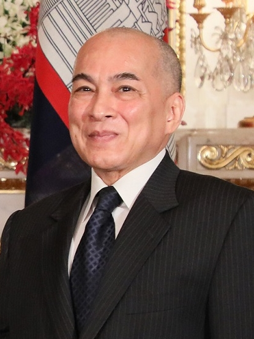
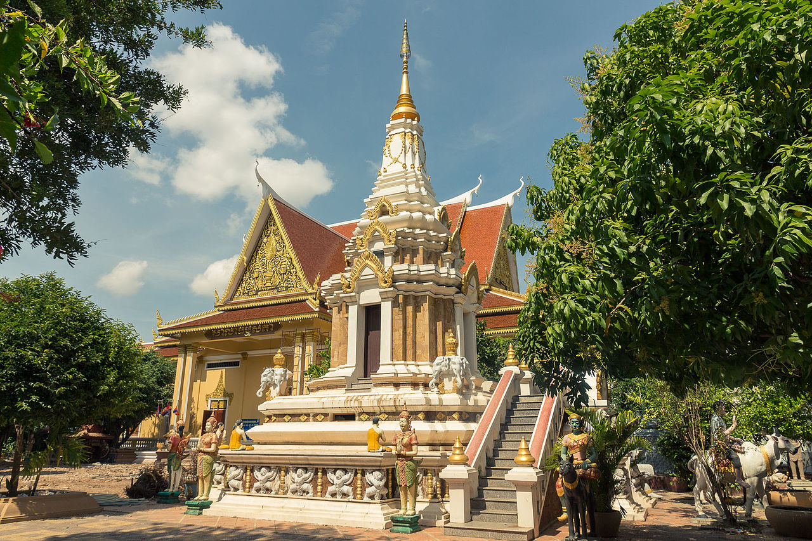

Flag

The flag of Cambodia (Khmer: ទង់ជាតិកម្ពុជា, Tóng-chéat Kămpŭchéa, lit. 'National Flag of Cambodia') in its present form was originally adopted in 1948 and readopted in 1993, after the Constituent Assembly election in 1993 and restoration of the Cambodian monarchy.
Read More.
King
Norodom Sihamoni (Khmer: នរោត្តម សីហមុនី, [nɔːroːɗɑm səjhaʔmuniː]; born 14 May 1953) is the King of Cambodia. He became King on 14 October 2004, a week after the abdication of his father, Norodom Sihanouk.[1] He is the eldest son of King Sihanouk and Queen Norodom Monineath. He was Cambodia's ambassador to UNESCO and was named by a nine-member throne council to become the next king after his father Norodom Sihanouk abdicated in 2004. Before ascending the throne, Sihamoni was educated in Czechoslovakia and was best known for his work as a cultural ambassador in Europe and as a classical dance instructor.
Read More.
Angkor Wat (Religious Structure)

Angkor Wat (/ˌæŋkɔːr ˈwɒt/; Khmer: អង្គរវត្ត "Temple city/city of temples"[2]) is the largest religious structure (temple complex) in the world by land area,[3] measuring 162.6 hectares (1.626 km2; 402 acres),[4] located in Cambodia. The temple was built by Suryavarman II[5] in the early 12th century in Yaśodharapura (Khmer: យសោធរបុរៈ, present-day Angkor), the capital of the Khmer Empire, as the state temple for the Empire.[6][7] Originally constructed as a personal mausoleum for the Khmer King Suryavarman II, dedicated to Vishnu in the early 12th century, it was converted to a Buddhist Temple towards the end of 12th century.[7][8]
Read More.
Religion
Buddhism is the official religion of Cambodia. Approximately 98% of Cambodia's population follows Theravada Buddhism, with Islam, Christianity, and tribal animism making up the bulk of the small remainder.[1][2] The wat (Buddhist monastery) and Sangha (monkhood), together with essential Buddhist doctrines such as reincarnation and the accumulation of merit, are at the centre of religious life. According to The World Factbook in 2013, 97.9% of Cambodia's population was Buddhist, 1.1% Muslim, 0.5% Christian and 0.6% Other.[1] According to the Pew Research Center in 2010, 96.9% of Cambodia's population was Buddhist, 2.0% Muslim, 0.4% Christian, and 0.7% folk religion and non religious.[3]
Read More.